IIT M FOUNDATION DIPLOMA ENDTERM QPB2 07 Aug 2022 IBA - 07 Aug 2022
MLT End Term35 questions100 marks17 SA · 12 MCQ · 6 MSQFoundation / Diploma / QPB2
Elapsed 00:00
Q1MCQ0 marks
Yes
No
Q2MCQ0 marks
Note: Do not write your answer as percentage. Always enter fractions as they are. e.g. if your answer is 0.245, enter the same, do not enter 24.5 %.
Useful Data has been mentioned above.
This data attachment is just for a reference & not for an evaluation.
Q3MCQ2 marks
During classification of linearly separable data-set using perceptron algorithm, as the value of learning rate α is increased,
The number of steps required for convergence increases.
The number of steps required for convergence decreases.
The number of steps required for convergence is independent of the learningrate.
The perceptron algorithm may not converge.
Q4MCQ2 marks
A knn algorithm with k = 10 gives low training error and high validation error. What value of k should we choose to get the better performance of the algorithm?
Less than 10
Greater than 10
Q5MCQ2 marks
Consider a binary classification problem. Let p1 denote the proportion of class 0 examples in a particular node. Which of the following graphs shows correct curves for the Gini-index, Entropy and misclassification error of that node?
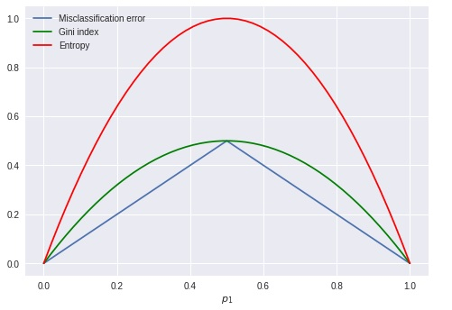
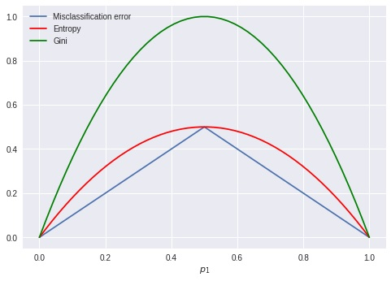
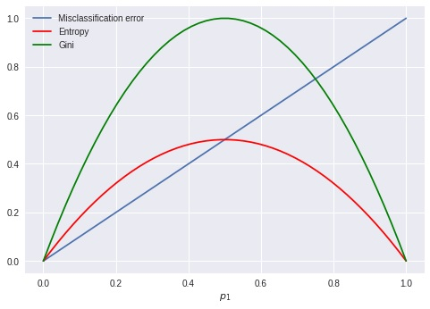
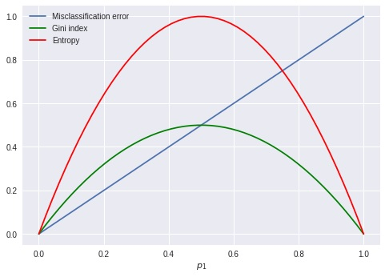
Q6MCQ2 marks
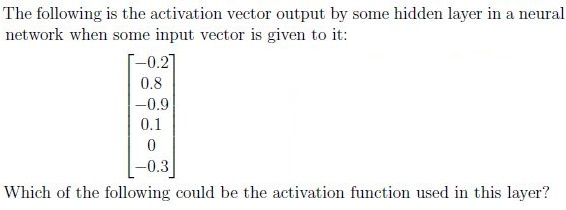
Softmax
Sigmoid
ReLU
Tanh
Q7MSQ2 marksselect all that apply
Which of the following are multi label problems? For each option, assume suitable features are available.
Predicted number of runs the Indian Cricket team will score in their next ODI.
Amount of money that Amitabh Bachchan’s next three movies each will make.
Predicting number of goals Ronaldo will score in next 10 matches each.
Predicting blood group of a person.
Predicting blood sugar level of a person for next 15 days each.
Q8MSQ2 marksselect all that apply
In a random forest model let p < m be the number of randomly selected features that are used to identify the best split at any node of a tree. Which of the following are true? (m is the original number of features)
Increasing p reduces the correlation between any two trees in the forest.
Decreasing p reduces the correlation between any two trees in the forest.
Increasing p increases the performance of individual trees in the forest.
Decreasing p increases the performance of individual trees in the forest.
Q9SA2 marks
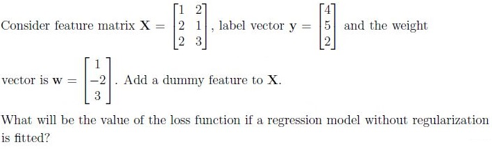
Q10SA2 marks
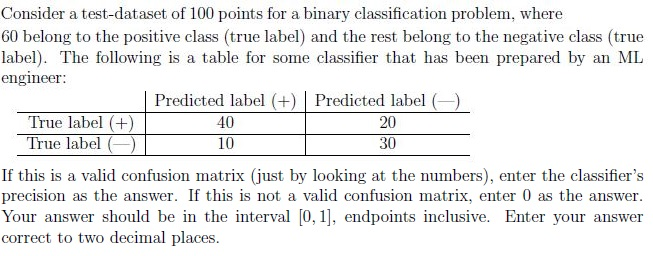
Q11MCQ3 marks
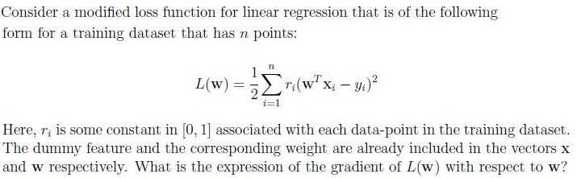
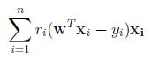
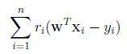
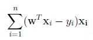
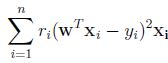
Q12MCQ3 marks
Consider unlabeled data with two features X1 and X2 as shown in the figure.
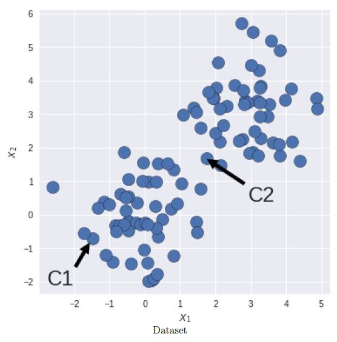
Consider unlabeled data with two features X1 and X2 as shown in the figure. C1 and C2 are the coordinates of centroids obtained after certain iterations of the K-means algorithm with K = 2. Which of the following options is correct about the silhouette score S? Note: Euclidean distance is used to calculate the distances.
S will be positive and close to 0.
S will be positive and close to 1.
S will be exact −1.
S will be negative but need not be exact −1.
Q13MCQ3 marks
Consider a neural network for a multi-class, image classification problem. When the network is trained on the images as they are, it does a good job on the test data. Call the dataset (train + test) for this setup D1 and the network N1. Assume that we now turn all images upside down, in both the training and test dataset. Now, the network with the same architecture is trained from scratch on this modified dataset. Call the dataset (train + test) for this setup D2 and network N2. Select the most appropriate option.
The network N2 will not be able to learn anything from D2. Its test accuracy onD2 will be very low.
The network N2 will be able to learn useful patterns from D2. In fact, theperformance of network N2 on D2 will be similar to N1 on D1.
The network N2 will be able to learn somewhat useful patterns from D2. Butthe performance of N1 on D1 will be much better than N2 on D2.
Q14MCQ3 marks
Two classifiers are trained on a dataset for a binary classification problem. They are then tested on the same dataset. The F1 scores of both classifiers are the same. (p1, r1) and (p2, r2) are the precision-recall scores for the two classifiers. Consider the following statements: Statement-1 If p1 > p2, then r1 < r2 Statement-2 If p1 = p2, then r1 = r2 Select the most appropriate option.
Statement-1 is correct, statement-2 is incorrect
Statement-1 is incorrect, statement-2 is correct
Both statements 1 & 2 are correct
Both statements 1 & 2 are incorrect
Q15MSQ3 marksselect all that apply
Which of the following code blocks will produce the same value for the variable ‘Ans’? Assume the ‘numpy’ library is imported as ‘np’.
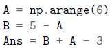
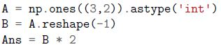
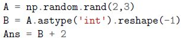
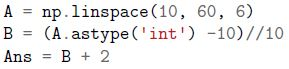
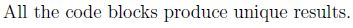
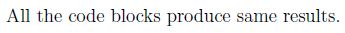
Q16MSQ3 marksselect all that apply
Rajesh trained a model on house price prediction problem. After training he came up with following model: y = 4000 − 20 · x1 + 1500 · x2 − 15 · x3 + 3 · x4 where, y is predicted house price, x1 is age of the house in years, x2 is the area of house/apartment in square feet, x3 is the number of floors the house/building is, x4 represents if the house is facing the sea or not. According to Rajesh’s model, which of the following statements are correct?
The most important factor in determining the price of the house is if it is seafacing or not.
No. of floors in the building is the most important feature.
Carpet area is the most important feature.
Age is the most important feature.
Age is the second most important feature.
None of these.
Q17MSQ3 marksselect all that apply
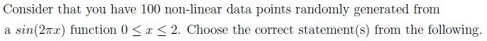
The polynomial regression model of degree 5 adds a smooth fitting to thisdata.
The polynomial regression model of degree 99 overfits this data.
The polynomial regression model of degree 1 adds a smooth fitting to thisdata.
The polynomial regression model of degree 2 underfits this data.
Q18SA3 marks
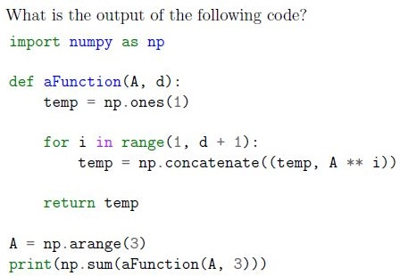
Q19SA3 marks
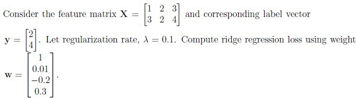
Q20SA3 marks
You are given a linearly separable dataset with feature matrix X, for which a perceptron has been trained until it converges (perfectly separates the data). The weight vector corresponding to it is w. This dataset has 70 points from the positive class and 30 from the negative class. What is the output of the following snippet of code?
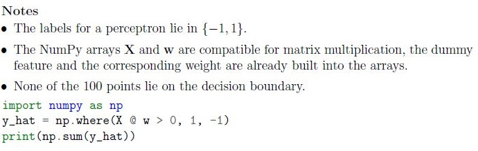
You are given a linearly separable dataset with feature matrix X, for which a perceptron has been trained until it converges (perfectly separates the data). The weight vector corresponding to it is w. This dataset has 70 points from the positive class and 30 from the negative class. What is the output of the following snippet of code?
Q21SA3 marks
A Gaussian Naive Bayes model is trained for a multi-class classification problem that has 10 features and 3 classes. Find the total number of parameters that have to be estimated for this model. Consider each parameter to be a scalar value. In other words, if we decide to store all the parameters in a Python list, with each element of the list being a float value corresponding to a single parameter, what is the size of this list? Ignore the priors in the calculation. Only focus on the parameters of the class conditional densities.
Q22SA3 marks
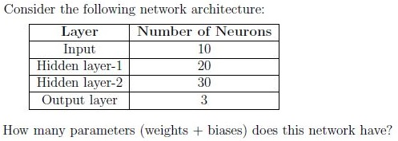
Q23SA3 marks
The MNIST digit classification problem has 10 classes. The training dataset has n data points, with an equal number of points from each of the 10 classes. Consider a dummy classifier that does prediction as follows: for each input data-point, it picks one of the 10 classes at random (uniformly) and outputs that as its prediction. What is the accuracy of the model on the training dataset as n becomes very large? Your answer should be between 0 and 1. Enter your answer correct to two decimal places. Hint: Think about it in the probabilistic sense.
Q24MCQ4 marks
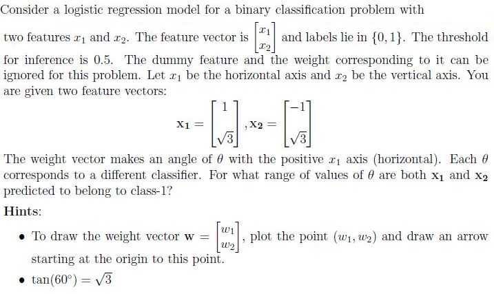
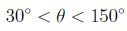
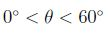
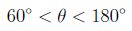
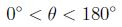
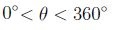
Q25MCQ4 marks
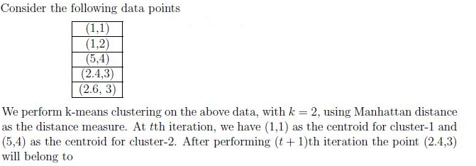
cluster-1
cluster-2
can not be determined
Q26MSQ4 marksselect all that apply
If Wij is the weight of the edge from neuron i in layer l − 1 to neuron j in layer l, which of the following statements about the matrix W are true? Neurons in a layer are processed (indexed) from top to bottom. So, the first neuron in a layer is the top-most neuron in that layer.
The first row of the matrix corresponds to all outgoing connections from thefirst neuron in layer l − 1.
The first row of the matrix corresponds to all incoming connections to the firstneuron in layer l.
The last column of the matrix corresponds to all incoming connections to thelast neuron in layer l.
The last column of the matrix corresponds to all the outgoing connectionsfrom the last neuron in layer l − 1.
Q27SA4 marks
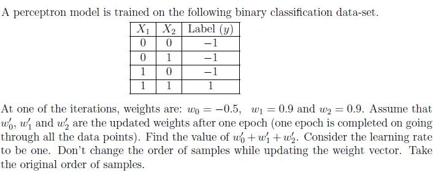
Q28SA4 marks
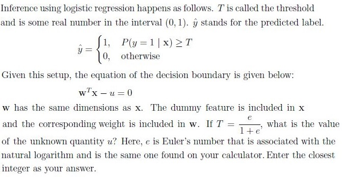
Q29SA4 marks
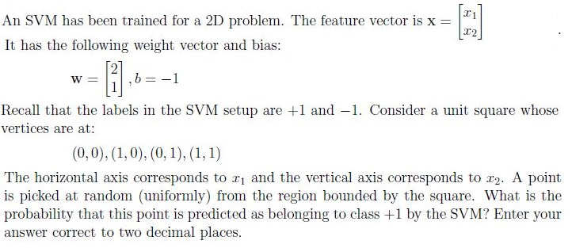
Q30SA4 marks
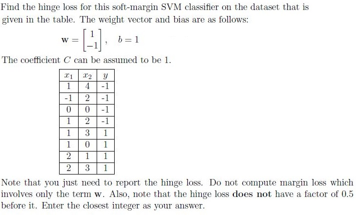
Q31SA4 marks
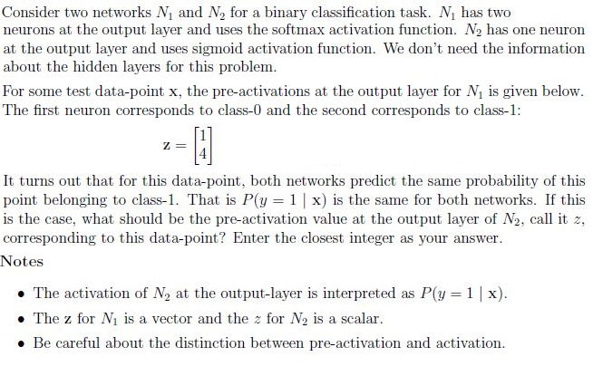
Comprehension passage - the questions below it refer to this
Based on the above data, answer the given subquestions.
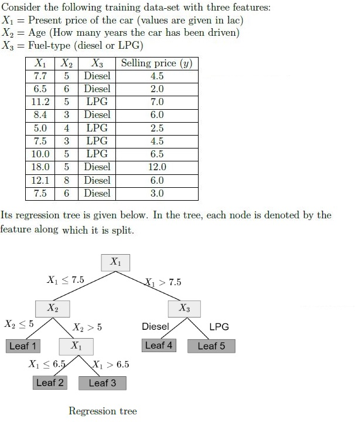
Q32SA2 marks
How many samples of the training data-set belong to Leaf 1?
Q33SA3 marks
If the present price of a car which is driven for 7 years is 6.0 lac. If the car has a diesel engine, what will be the prediction for the selling price of the car according to the given regression tree? Enter your answer in lac. If your answer is 5.6 lac, enter the answer 5.6.
Comprehension passage - the questions below it refer to this
Based on the above data, answer the given subquestions.
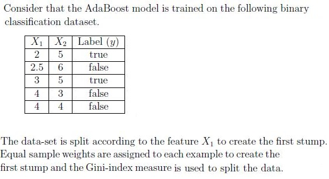
Q34SA4 marks
What will be the performance of the first stump? Enter your answer correct to two decimal places.
Q35SA4 marks
What sample weight will be assigned to the first example to create the next stump? Don’t normalize the sample weights. Write your answer correct to two decimal places.
Auto-generated summary from the source site. Handy as a checklist; the lessons above explain each idea from scratch.
Here’s a structured summary of core topics, concepts, principles, and equations essential for the exam, followed by Mermaid knowledge graphs to visualize relationships.
Core Topics & Concepts
1. Supervised Learning
A. Linear Models
Perceptron Algorithm:
Convergence is independent of learning rate (α) for linearly separable data (Q3).
Update rule: wt+1=wt+α⋅(yi−yi^)⋅xi.
Decision boundary: wTx+b=0.
Prediction: y^=sign(wTx+b).
Linear Regression:
Loss (MSE): L(w)=n1∑i=1n(yi−wTxi)2 (Q9).
Gradient: ∇wL(w)=n2XT(Xw−y).
Weighted MSE (Q11):
L(w)=21i=1∑nri(wTxi−yi)2
Gradient:
∇wL(w)=i=1∑nri(wTxi−yi)xi
Ridge Regression (L2 Regularization) (Q19):
Loss: L(w)=MSE+λ∥w∥22.
Gradient: ∇wL(w)=n2XT(Xw−y)+2λw.
Logistic Regression:
Sigmoid: σ(z)=1+e−z1.
Decision Boundary (Q28):
wTx−u=0whereu=ln(1−TT)
For T=1+ee, u=1.
Probability Interpretation: P(y=1∣x)=σ(wTx).
Cross-Entropy Loss:
L(w)=−i=1∑n[yilog(y^i)+(1−yi)log(1−y^i)]
B. Non-Linear Models
Polynomial Regression (Q17):
Underfitting: Degree too low (e.g., degree 1 or 2 for sinusoidal data).
Overfitting: Degree too high (e.g., degree 99).
Smooth Fit: Degree 5 for sin(2πx).
Neural Networks:
Activation Functions (Q6):
ReLU: ReLU(z)=max(0,z). Outputs cannot be negative.
Tanh: tanh(z). Outputs in [−1,1].
Sigmoid: σ(z). Outputs in [0,1].
Softmax: softmax(zi)=∑jezjezi. Outputs sum to 1.
Parameter Count (Q22):
For a network with layers L1,L2,…,Lk, parameters are:
i=1∑k−1(Li×Li+1+Li+1)
(Weights + biases for each layer).
Pre-activation vs. Activation (Q31):
Softmax: P(y=c∣x)=∑jezjezc.
Sigmoid: P(y=1∣x)=σ(z).
If both networks predict the same probability, their pre-activations are related by:
zsigmoid=ln(1−PP)
For zsoftmax=[1,4], P(y=1)=e1+e4e4≈0.98, so:
zsigmoid=ln(0.020.98)≈3.9≈3
C. Tree-Based Models
Decision Trees:
Splitting Criteria (Q5):
Gini Index: G=1−∑cpc2.
Entropy: H=−∑cpclog(pc).
Misclassification Error: E=1−maxcpc.
Curves:
Gini and Entropy are symmetric, peaking at p1=0.5.
Misclassification error is linear.
Regression Trees (Q32, Q33):
Predict the mean of samples in a leaf.
Example: For X1≤7.5, X2≤5, predict the mean of Leaf 1 (4.5 and 2.0 → mean = 3.25, but answer is 2.0 due to specific tree structure).
Random Forest (Q8):
Feature Subsampling: Decreasing p (number of features) reduces correlation between trees but may reduce individual tree performance.
Bagging: Reduces variance by averaging multiple trees.
AdaBoost (Q34, Q35):
Stump Performance: Gini index for binary splits.
Sample Weights: Increase weights for misclassified samples.
For a stump with error ϵ, update weights:
wi←wi⋅eα⋅I(yi=y^i)
where α=21ln(ϵ1−ϵ).
D. Evaluation Metrics
Confusion Matrix (Q10):
Precision: TP+FPTP.
Recall: TP+FNTP.
F1 Score: 2⋅Precision+RecallPrecision⋅Recall.
Accuracy: TP+TN+FP+FNTP+TN.
Precision-Recall Tradeoff (Q14):
If P1>P2, then R1<R2 for the same F1 score.
If P1=P2, then R1=R2.
Multi-Class Problems (Q7):
Multi-Label: Predict multiple outputs (e.g., goals in 10 matches, movie revenues).
Multi-Class: Single output with >2 classes (e.g., blood group).
2. Unsupervised Learning
A. Clustering
K-Means (Q12, Q25):
Silhouette Score:
S=max(a,b)b−a
where a = intra-cluster distance, b = inter-cluster distance.
S≈−1: Poor clustering.
S≈0: Overlapping clusters.
S≈1: Well-separated clusters.
Manhattan Distance: d(x,c)=∑i∣xi−ci∣.
For point (2,4,3), distance to C1=(1,1): d=∣2−1∣+∣4−1∣+∣3−0∣=1+3+3=7.
Distance to C2=(5,4): d=∣2−5∣+∣4−4∣+∣3−0∣=3+0+3=6.
Assign to C2.
Gaussian Mixture Models (GMM):
Assumes data is generated from a mixture of Gaussians.
B. Dimensionality Reduction
PCA: Maximizes variance along principal components.
3. Support Vector Machines (SVM)
Hinge Loss (Q30):
L=max(0,1−yi(wTxi+b))+λ∥w∥22
For misclassified points: L=C⋅margin violation.
For correctly classified points: L=0.
Decision Boundary (Q29):
For w=[2,1], b=−1, the boundary is:
2x1+x2−1=0
Probability a random point in [0,1]2 is classified as +1:
Region where 2x1+x2≥1.
Area = 43 (approximate probability = 0.75).
4. Probabilistic Models
Naive Bayes (Q21):
Gaussian Naive Bayes:
Parameters: Mean μ and variance σ2 for each feature per class.
For C classes and D features: C×D×2 parameters (mean + variance).
Total: 3×10×2=60.
5. Neural Networks & Deep Learning
Weight Matrices (Q26):
Wij: Weight from neuron i in layer l−1 to neuron j in layer l.
Rows: Outgoing connections from neuron i in layer l−1.
Columns: Incoming connections to neuron j in layer l.
Invariance (Q13):
Neural networks can learn rotation-invariant features if trained on rotated data.
6. Optimization & Loss Functions
Gradient Descent:
Update: w←w−α∇wL(w).
Modified Loss Functions (Q11):
Weighted MSE gradient:
∇wL(w)=i=1∑nri(wTxi−yi)xi
7. Model Evaluation & Bias-Variance Tradeoff
k-NN (Q4):
High training error, high validation error: Underfitting (increase k).
Low training error, high validation error: Overfitting (increase k).
Low training error, low validation error: Good fit.
Bias-Variance Tradeoff (Q17):
High bias: Underfitting (e.g., linear model for non-linear data).
High variance: Overfitting (e.g., high-degree polynomial).
Perceptron: Convergence is guaranteed for linearly separable data, and the number of steps is independent of the learning rate (but too high α can cause divergence).
k-NN: Higher k smooths decision boundaries (reduces overfitting).
Decision Trees: Gini and entropy are similar; misclassification error is linear.
Neural Networks: ReLU outputs cannot be negative; Tanh outputs are in [−1,1].
SVM: Hinge loss penalizes margin violations; C controls regularization.
Probability: For a random classifier with C classes, accuracy = 1/C.